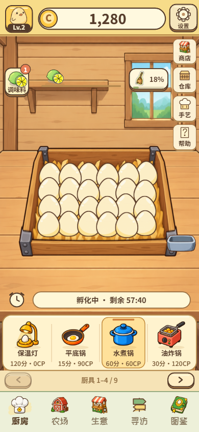

正视 · 蛋群沿用 engine.js 原始排布公式与原蛋 / 原木窝素材 · HUD 与五入口为 Runtime 原样 · 背景为 SVG 程序化 Lv.2 木屋 · 390 × 844 · 独立原型，未改正式 Runtime

当前 Runtime 的结构问题（取自 Kitchen / Farm Audit）
· 蛋窝、调味、计时、厨具分处"中间插画 / 左上按钮 / 下方横条 / 底部商品格"，选材 → 开锅 → 等待 → 收取需要玩家自己拼接。
· 右侧商店 / 仓库 / 手艺 / 帮助四个同权按钮常驻，与五入口一起让主场景像功能导航页。
· 计时条离蛋窝远；墙架上的"已选调味"只是回显，与左上入口关系弱。
· 背景是透视桌面 + 窗户 + 搁板的完整房间插画，功能区没有被背景承托。
保留上墙 → 蛋窝 → 厨具的阅读顺序；蛋窝尺寸与位置与 Runtime 一致（1.22×）；底部 4 格厨具 + 翻页。
真正重构① 透视台面房间 → 正视圆木墙 + 立柱 + 顶梁椽头 + 前立面柜台；② 独立计时横条 → 贴在蛋窝前沿的状态铭牌；③ 浮动厨具卡 → 嵌进柜台立面的格口，名牌挂在立板上；④ 右侧四按钮竖列 → 一根挂杆上的三块木牌，帮助进 HUD。
调味区左上整块搁板就是入口：柠檬 + 空位两个真实槽位，搁板右端立着"调味料 已选 1/2"价签卡。
厨具区柜台格口 4 格，当前锅格口亮起并挂"本锅"吊签；名牌含耗时 / CP；翻页是柜台上的木旋钮。
子按钮商店 / 仓库 / 手艺同挂一根杆（一个物件组），清洁挂在其下；帮助并入 HUD。
背景正视圆木墙（四色截面）、两侧立柱、顶梁椽头、蛋窝背后深色护墙板、柜台；无窗、无透视地板、无桌腿。
最大风险与旧版关系最近，用户可能仍觉得"位置没大变"；右上三块木牌仍是三个同权入口。
保留蛋窝原群形与遮挡（1.25×，略大于 Runtime）；底部仍是 4 个厨具 + 翻页。
真正重构① 一条柜台木板把屏幕分成上"本锅舞台"、下"下一锅备料台"（沿用生意页已认可的木板分区 + 奶油底）；② 新增独立"本锅牌"：当前厨具 + 本锅已用调味 + 24 枚 + 影响本锅的清洁度；③ 调味从按钮 + 墙架回显 → 两格小木柜；④ 商店 / 仓库 / 手艺从右侧竖列 → 备料台底部三件物件。
调味区左上两格小柜：第一格柠檬，第二格空位 +；下方"下一锅调味 1/2 ›"。
厨具区奶油底上的四个木托盘展示位，名牌 + 耗时 / CP；当前锅托盘亮起 + "本锅"；标题"下一锅 · 点厨具开锅"。
子按钮三件物件入口在备料台底部（320 高度收成横向小签）；帮助进 HUD；清洁并入本锅牌。
背景上半浅色圆木墙 + 顶梁，中间柜台木板，下半奶油备料台。
最大风险下半部与生意页的组织最像，Kitchen 自身辨识度偏弱；本锅牌复用生意"营业中"绿板，语义需确认。
保留正视、蛋窝原群形（1.20×）、4 格厨具 + 翻页、HUD / 五入口语义。
真正重构① 背景变为 Lv.2 木屋剖面：山墙交叉椽、两侧圆木端头、地梁——木屋本身就是舞台边框（升级＝换这个框的材质）；② 本锅从厨具栏高亮 → 屋脊吊下的"本锅吊牌"，读序变为 本锅 → 蛋窝 → 下一锅；③ 调味与厨具合并成底部唯一的"下一锅"配方台；④ 子按钮拆成有语义的物件：清洁＝扫帚、手艺＝厨师帽、仓库＝蛋窝旁收集盆、商店＝配方台上的小卖部牌。
调味区离开左上，与厨具同在"下一锅"台第一排：标签 + 2 槽位 + "调味 1/2 ›"。
厨具区第二排 4 个格口，当前锅亮起 + "本锅"；屋脊吊牌另行展示本锅。
子按钮没有按钮列，四个入口各自附着在对应物件上；帮助进 HUD。
背景木屋剖面 + 圆木墙 + 深色配方台。
最大风险调味离开左上（与用户倾向相反）；山墙占顶部空间，320 高度下两侧物件缩到约 0.7；入口物件化后的可发现性需实测。
口径
· 蛋群：engine.js startBatch 同一公式（6×4 基础位 ±3 抖动、60px 蛋图、31 / 26 间距、从后往前绘制），素材 egg-v4 + stage-bed-1-v6，未重排。
· 三个方案共用同一枚种子，蛋群像素级一致，只缩放整组。
· 可收取状态用 Runtime 的破壳绘制（光圈 + 闪点 + 角色图），角色来自现有 chick-v4。
· 厨具、调味、扫帚、导航、HUD 全部为现有资产；木墙、屋架、柜台、槽位、吊牌为 SVG / CSS 绘制。
A · 320×568
A · 可收取
B · 320×568
B · 可收取
C · 320×568
C · 可收取
C′ · 320×568
C′ · 可收取
1. C 是三者中唯一一眼读成"Lv.2 木屋厨房"、又没有退回完整室内插画的方案：木屋剖面是舞台边框而不是房间；本锅吊牌 → 蛋窝 → 下一锅的读序最清楚；子入口从按钮列变成有语义的物件。
2. C 的硬伤是调味离开左上。C′ 用屋檐吊架把调味放回左上（仍是 2 个真实槽位 + 入口），底部配方台只剩厨具与商店，结构更干净。
3. 从 B 借：本锅信息组合（厨具 + 已用调味 + 清洁）可以并进 C′ 的吊牌；320 高度下入口收成横签的做法也可复用。
4. A 更像高质量换皮：背景和组件升级明显，但结构与旧版最近，不建议做主方向。
5. 限制：木屋框为 SVG 程序化绘制，质感低于 ImageGen 资产。C′ 若获认可，应以此屏为构图真值，只让 ImageGen 出无文字的木屋框分层（屋顶 / 圆木墙 / 端头 / 地梁 / 配方台），蛋窝、厨具、HUD 保持现有素材。